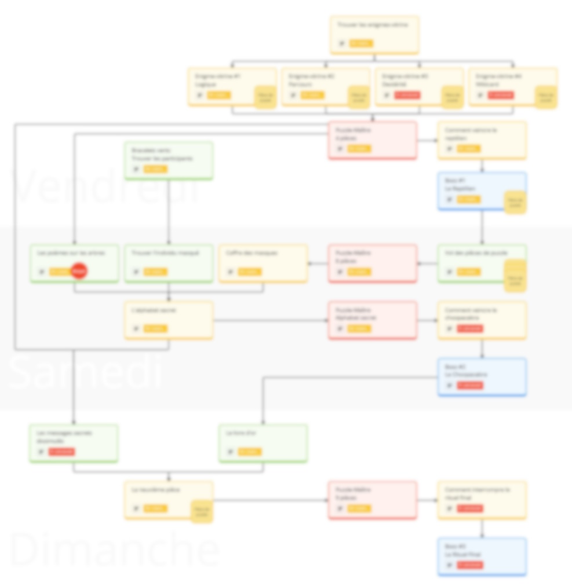
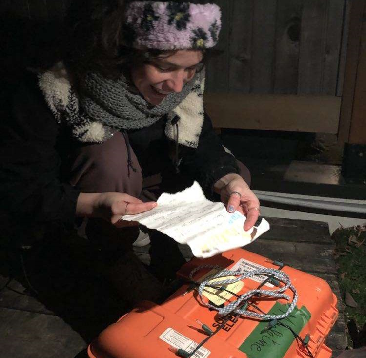
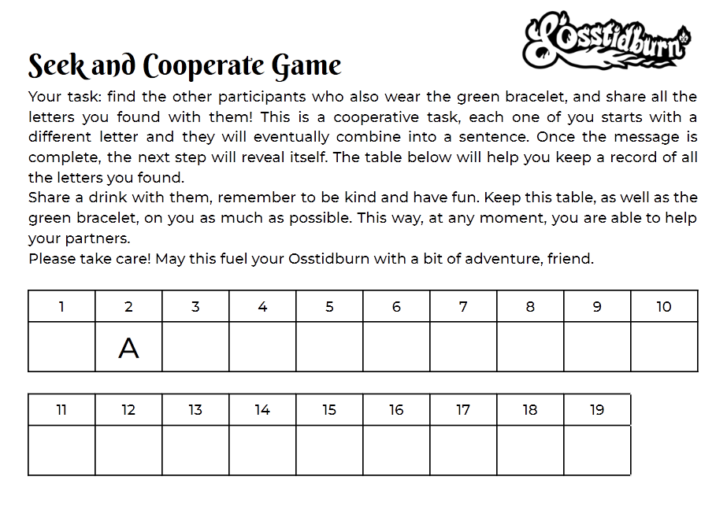
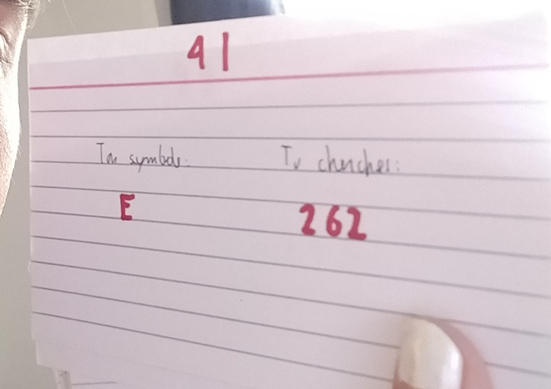

🎭 Social games
Through my passion for both gaming and social events, I have a particular interest in crafting experiences that help people connect with each other, while still providing the unique wonders brought by the act of playing (ie not resorting to system-less approaches like asking premade questions to participants). I found success using elements such as fragmented knowledge, information hidden in plain sight, and treasure hunts.
|  |
L'Osstidquest (2024)This top secret 3-day, 24-steps quest designed for the upcoming festival L'Osstidburn 2024 features social quests, puzzle-solving, treasure/man hunts and theatrical plays. I lead a team of ~10 people to make this quest come to life. |
|  |
Birthday treasure hunt (2023)Made for the birthday of a friend of mine. In this 10-step treasure hunt through Montreal starting in an escape room, my friend got to party up unexpectedly with her friends to save them from vanishing. We hid clues in bars and balconies, had them solve riddles and split up to eventually come back to her apartment to party. |
|  |
The green bracelets (2023)Made for the 500 people festival L'Osstidburn. I randomly selected 19 participants, to whom I gave a sheet of paper (pictured on the left) and a green bracelet. Each participant had a single, different letter out of 19 letters that make up a sentence. They were instructed to find each other among festival participants and share the letters they knew, eventually leading them on a treasure hunt, and learning they have to read the third word of each sentence in the instruction text. |
|  |
Birthday game (2022)Made for my birthday party where several people did not know each other. Requiring 18 participants, each were given a card containing some information (pictured on the left). They were instructed to find the person with the card number who matched the one written on their own, eventually leading them to look for words in a book at the pages corresponding to the number on their cards. |